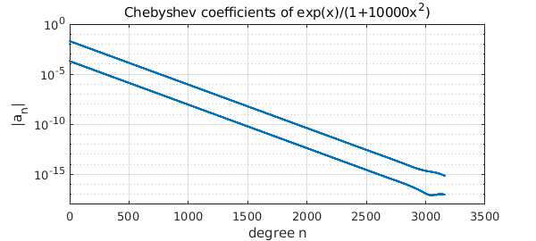
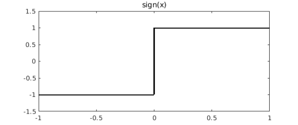
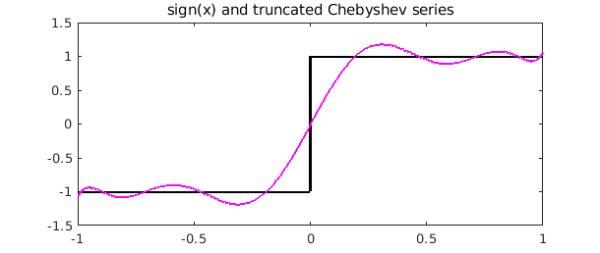
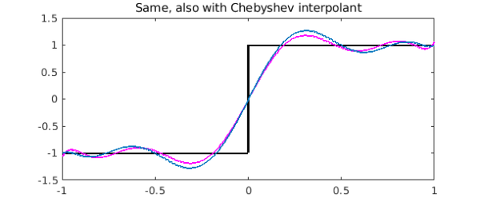

Every function defined on $[-1,1]$, so long as it is a little bit smooth (Lipschitz continuity is enough), has an absolutely and uniformly convergent Chebyshev series:
$$ f(x) = a_0 + a_1 T_1(x) + a_2 T_2(x) + \cdots . $$
The same holds on an interval $[a,b]$ with appropriately scaled and shifted Chebyshev polynomials.
For many functions you can compute these coefficients with the command chebcoeffs. For example, here we compute the Chebyshev coefficients of a cubic polynomial:
x = chebfun('x');
format long
disp('Cheb coeffs of 99x^2 + x^3:')
p = 99*x.^2 + x.^3;
a = chebcoeffs(p)'
Cheb coeffs of 99x^2 + x^3: a = 0.250000000000000 49.499999999999986 0.750000000000000 49.499999999999986
Notice that following the usual MATLAB convention, the coefficients appear in order from highest degree to lowest. Thus it is often more useful to write
disp('Cheb coeffs of 99x^2 + x^3:')
a = chebcoeffs(p)'; a = a(end:-1:1)
Cheb coeffs of 99x^2 + x^3: a = 49.499999999999986 0.750000000000000 49.499999999999986 0.250000000000000
Similarly, here are the Chebyshev coefficients down to level $10^{-15}$ of $\exp(x)$:
disp('Cheb coeffs of exp(x):')
a = chebcoeffs(exp(x))'; a = a(end:-1:1)
Cheb coeffs of exp(x): a = 1.266065877752008 1.130318207984970 0.271495339534077 0.044336849848664 0.005474240442094 0.000542926311914 0.000044977322954 0.000003198436462 0.000000199212481 0.000000011036772 0.000000000550590 0.000000000024980 0.000000000001039 0.000000000000040 0.000000000000001
You can plot the absolute values of these numbers on a log scale with plotcoeffs:
FS = 'fontsize'; MS = 'markersize'; LW = 'linewidth';
plotcoeffs(exp(x),'.-',LW,1,MS,20), grid on
xlabel('degree n',FS,14)
ylabel('|a_n|',FS,14)
title('Chebyshev coefficients of exp(x)',FS,14)
Here's a similar plot for a function that needs thousands of terms to be represented to 15 digits. (Can you explain why it looks like a wide stripe?)
plotcoeffs(exp(x)./(1+10000*x.^2)), grid on
xlabel('degree n',FS,12)
ylabel('|a_n|',FS,12)
title('Chebyshev coefficients of exp(x)/(1+10000x^2)',FS,16)

These methods will work for any function $f$ that's represented by a global polynomial, i.e., a chebfun consisting of one fun. What about Chebyshev coefficients for functions that are not smooth enough for such a representation? Here one can use the trunc option in the Chebfun constructor. For example, suppose we are interested in the function
f = sign(x);
figure, plot(f,'k',LW,2), ylim([-1.5 1.5])
title('sign(x)',FS,16)

If we try to compute all the Chebyshev coefficients, we'll get an error. On the other hand we can compute the first ten of them like this:
p = chebfun(f,'trunc',10); a = chebcoeffs(p)'; a = a(end:-1:1)
a =
0
1.273239544735162
-0.000000000000000
-0.424413181578388
0.000000000000000
0.254647908947032
0.000000000000000
-0.181891363533594
-0.000000000000000
0.141471060526130
Here's the degree 9 polynomial obtained by adding up these first terms of the Chebyshev expansion:
hold on
plot(p,'m',LW,2)
title('sign(x) and truncated Chebyshev series',FS,16)

This is not the same as the degree 9 polynomial interpolant through 10 Chebyshev points:
pinterp = chebfun(f,10);
plot(pinterp,'--','color',[0 .8 0],LW,2)
title('Same, also with Chebyshev interpolant',FS,16)

References
- L. N. Trefethen, Approximation Theory and Approximation Practice, SIAM, 2013.